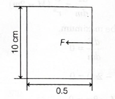
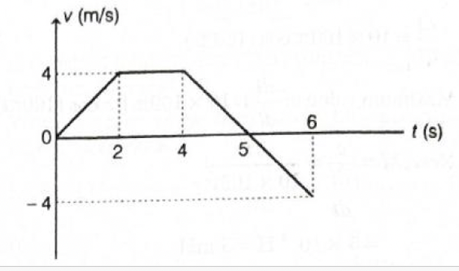
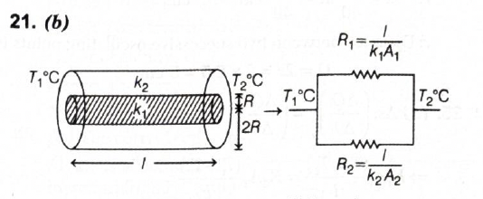
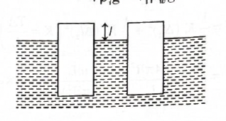

- Answer: \((c)\) \(\sqrt{6}\)
- Quick explanation: Since the reflected beam is plane polarised, the incidence angle is Brewster's angle. For light going from water to glass, \(\tan i_p = \dfrac{\mu_g}{\mu_w}\). Using \(i_p = 60^\circ\) and \(\mu_w = \sqrt{2}\), we get \(\mu_g = \sqrt{3}\times\sqrt{2}=\sqrt{6}\).
-
BITSAT chapter / topic / subtopic: Optics
→ Polarisation of Light → Brewster's law - Page
P234
Optics → Refraction of Light → Refractive index - Page P226 - Brewster's law says that when reflected light is completely plane polarised, the angle of incidence is called Brewster's angle.
- For two media, Brewster's law is: \(\mu_{21}=\tan i_p\).
- Here light is travelling from water to glass, so the relative refractive index is: \(\mu_{gw}=\dfrac{\mu_g}{\mu_w}\).
- Given \(i_p=60^\circ\), so: \(\tan 60^\circ=\sqrt{3}\).
- Therefore: \(\dfrac{\mu_g}{\mu_w}=\sqrt{3}\).
- Given \(\mu_w=\sqrt{2}\), so: \(\mu_g=\sqrt{3}\times\sqrt{2}=\sqrt{6}\).
- Final result: Refractive index of glass \(=\sqrt{6}\).
- Simple memory tip: Plane polarised reflected light means Brewster's law immediately: \(\tan i_p =\) refractive index of second medium with respect to first medium.
- Why the other options are wrong: \(\sqrt{3}\) is only the relative refractive index of glass with respect to water. \(\sqrt{\dfrac{3}{2}}\) comes from using the ratio wrongly. Since \(\sqrt{6}\) is present, “None of these” is not correct.
- Exam shortcut: If medium is not air, do not directly take \(\tan i_p\) as absolute refractive index. Multiply by the refractive index of the first medium.
- Answer: \((b)\) 2
- Quick explanation: Photon energy is \(\dfrac{hc}{\lambda}=\dfrac{1242}{90}=13.8\ eV\). This energy is used partly for ionisation and the remaining becomes kinetic energy. So \(10.4=13.8-\dfrac{13.6}{n^2}\), giving \(n=2\).
-
BITSAT chapter / topic / subtopic: Modern
Physics → Photons → Photon energy - Page P246
Modern Physics → Bohr's model → Energy levels of hydrogen atom - Page P248 - Energy of the incident photon is: \(E=\dfrac{hc}{\lambda}\).
- Given \(hc=1242\ eV\ nm\) and \(\lambda=90\ nm\).
- So: \(E=\dfrac{1242}{90}=13.8\ eV\).
- This photon energy is used in two parts: first to ionise the electron from the \(n\)th orbit, and the remaining energy appears as kinetic energy of the ejected electron.
- Ionisation energy from the \(n\)th orbit of hydrogen is: \(\dfrac{13.6}{n^2}\ eV\).
- Therefore: \(K.E. =\) photon energy \(-\) ionisation energy.
- Substitute: \(10.4=13.8-\dfrac{13.6}{n^2}\).
- So: \(\dfrac{13.6}{n^2}=13.8-10.4=3.4\).
- Hence: \(n^2=\dfrac{13.6}{3.4}=4\), so \(n=2\).
- Final result: \(n=2\).
- Simple memory tip: Photon energy first pays the “ionisation cost”; whatever is left becomes kinetic energy.
- Why the other options are wrong: \(n=1\), \(3\), and \(4\) do not satisfy \(10.4=13.8-\dfrac{13.6}{n^2}\).
- Exam shortcut: For hydrogen atom, remember \(E_n=-\dfrac{13.6}{n^2}\ eV\). Ionising from that level needs \(\dfrac{13.6}{n^2}\ eV\).
- Answer: \((c)\) 144
- Quick explanation: A soap/water film has two free surfaces, so force due to surface tension is \(F=2Tl\). Here \(T=72\ dynes/cm\), \(l=10\ cm\), and displacement \(=1\ mm=0.1\ cm\). Hence \(W=F\times x=2\times72\times10\times0.1=144\ ergs\).
- BITSAT chapter / topic / subtopic: Mechanics of Solids and Fluids → Surface Tension → Work done in stretching a liquid film - Page P101
-

- Surface tension acts along the free surface of the liquid film.
- A water film has two free surfaces, one on each side of the film.
- So the force on the movable wire is: \(F=2Tl\).
- Given \(T=72\ dynes/cm\) and \(l=10\ cm\).
- Therefore: \(F=2\times72\times10=1440\ dynes\).
- The distance increased is \(1\ mm=0.1\ cm\).
- Work done: \(W=F\times x=1440\times0.1=144\ ergs\).
- Final result: Work done \(=144\ ergs\).
- Simple memory tip: For a liquid film, remember the factor \(2\), because the film has two surfaces.
- Why the other options are wrong: 72 or 36 usually come from missing the two-surface factor or unit conversion. 214 does not match the surface tension work calculation.
- Exam shortcut: Use \(W=2Tlx\) directly for stretching a film between wires.
- Answer: \((d)\)
- Quick explanation: Velocity is obtained by finding area under the acceleration-time graph. From \(0\) to \(2s\), acceleration is \(+2\ m/s^2\), so velocity rises to \(4\ m/s\). From \(2s\) to \(4s\), acceleration is zero, so velocity remains constant, and from \(4s\) to \(6s\), acceleration is negative, so velocity decreases linearly.
-
BITSAT chapter / topic / subtopic: Kinematics
→ Acceleration-time graph - Page P17
Kinematics → Velocity-time graph - Page P17 -

- The key idea is: change in velocity \(=\) area under acceleration-time graph.
- From \(t=0\) to \(t=2s\), acceleration is \(+2\ m/s^2\).
- Since initial velocity is \(0\), velocity after \(2s\) is: \(v=at=2\times2=4\ m/s\).
- So the \(v-t\) graph must rise linearly from \(0\) to \(4\ m/s\) during the first \(2s\).
- From \(t=2s\) to \(t=4s\), acceleration is zero.
- If acceleration is zero, velocity remains constant. So velocity stays at \(4\ m/s\) from \(2s\) to \(4s\).
- From \(t=4s\) to \(t=6s\), acceleration is negative. Therefore velocity decreases linearly.
- The solution shows the velocity crossing zero at \(t=5s\) and reaching \(-4\ m/s\) at \(t=6s\).
- This matches option \((d)\).
- Final result: The correct velocity-time graph is option \((d)\).
- Simple memory tip: Slope of \(v-t\) graph is acceleration. Positive acceleration means rising line, zero acceleration means flat line, negative acceleration means falling line.
- Why the other options are wrong: The other graphs do not correctly show all three parts: rising velocity, then constant velocity, then linearly decreasing velocity into negative values.
- Exam shortcut: For \(a-t\) to \(v-t\), do not overthink the shape. Just convert each constant acceleration interval into a straight-line velocity segment.
- Answer: \((c)\)
- Quick explanation: For the convex lens, the object is placed at \(20\ cm\), which is \(2f\), since \(f=10\ cm\). So the convex lens forms a real image \(20\ cm\) beyond it. This image then acts as a virtual object for the concave lens, and the final image is virtual between the two lenses.
-
BITSAT chapter / topic / subtopic: Optics
→ Total Internal Reflection → Lenses - Page P228
Optics → Refraction of Light → Lens combination / Ray diagrams - Page P228 - The first lens is a convex lens of focal length \(10\ cm\).
- The object is placed \(20\ cm\) in front of the convex lens, which means the object is at \(2f\).
- For a convex lens, when the object is at \(2f\), the image is formed at \(2f\) on the other side of the lens.
- Therefore, the convex lens forms a real image \(20\ cm\) beyond the convex lens.
- The concave lens is placed \(30\ cm\) from the convex lens. So the image formed by the convex lens lies \(10\ cm\) before the concave lens.
- For the concave lens, these rays are already converging toward a point on its left side. The concave lens diverges the rays.
- Due to this divergence, the final image becomes virtual and is formed between the two lenses.
- Option \((c)\) correctly shows the convex lens first forming the image and the concave lens then making the final virtual image between the lenses.
- Final result: Correct ray diagram is option \((c)\).
- Simple memory tip: Convex lens at \(2f\) gives image at \(2f\). After that, check what the second lens does to the rays.
- Why the other options are wrong: The other diagrams do not correctly show the convex lens image position and the effect of the concave lens on the converging rays.
- Exam shortcut: In lens-combination ray diagrams, solve the first lens mentally first. Then treat its image as the object for the second lens.
- Answer: \((b)\) \(\dfrac{5}{6}I\)
- Quick explanation: The full displacement current between the capacitor plates equals the conduction current \(I\). Since the chosen surface area is only \(\dfrac{5A}{6}\), it gets \(\dfrac{5}{6}\) of the total electric flux change, so displacement current is \(\dfrac{5I}{6}\).
-
BITSAT chapter / topic / subtopic:
Electromagnetic Induction → Alternating Current / Maxwell's
correction → Displacement current - Page P211
Electrostatics → Capacitance → Parallel plate capacitor - Page P160 - Charge on the capacitor plates at time \(t\) is: \(q=It\).
- Electric field between the plates is: \(E=\dfrac{\sigma}{\varepsilon_0}=\dfrac{q}{A\varepsilon_0}=\dfrac{It}{A\varepsilon_0}\).
- The given plane surface has area \(\dfrac{5A}{6}\).
- Electric flux through this area is: \(\phi_E=EA'=\dfrac{It}{A\varepsilon_0}\times\dfrac{5A}{6}\).
- So: \(\phi_E=\dfrac{5It}{6\varepsilon_0}\).
- Displacement current is: \(I_d=\varepsilon_0\dfrac{d\phi_E}{dt}\).
- Substitute: \(I_d=\varepsilon_0\dfrac{d}{dt}\left(\dfrac{5It}{6\varepsilon_0}\right)\).
- Since \(I\) is constant: \(I_d=\dfrac{5I}{6}\).
- Final result: Displacement current through the given area \(=\dfrac{5I}{6}\).
- Simple memory tip: Full capacitor plate area gives displacement current \(I\). A fraction of the area gives the same fraction of \(I\).
- Why the other options are wrong: \(\dfrac{1}{6}I\) uses the missing area instead of the given area. \(6I\) and \(\dfrac{6}{5}I\) incorrectly increase the current instead of taking an area fraction.
- Exam shortcut: If electric field is uniform between capacitor plates, displacement current through partial area \(=\dfrac{\text{given area}}{\text{total plate area}}\times I\).
- Answer: \((c)\) \(800\ km\)
- Quick explanation: Use conservation of mechanical energy with gravitational potential energy \(-\dfrac{GMm}{r}\). Since the launch speed is \(\dfrac{V_e}{3}\) and \(V_e=\sqrt{\dfrac{2GM}{R}}\), solving gives \(R=8h\). Taking \(R=6400\ km\), \(h=800\ km\).
-
BITSAT chapter / topic / subtopic: Gravitation
→ Escape Speed - Page P85
Gravitation → Gravitational Potential Energy - Page P84 - Escape velocity from the surface of Earth is: \(V_e=\sqrt{\dfrac{2GM}{R}}\).
- Given velocity of projection: \(V=\dfrac{V_e}{3}\).
- At the surface of Earth, initial energy is: \(K_i+U_i=\dfrac{1}{2}mV^2-\dfrac{GMm}{R}\).
- At maximum height, velocity becomes zero, so final energy is only potential energy: \(U_f=-\dfrac{GMm}{R+h}\).
- By conservation of energy: \(-\dfrac{GMm}{R}+\dfrac{1}{2}m\dfrac{V_e^2}{9}=-\dfrac{GMm}{R+h}\).
- Since \(V_e^2=\dfrac{2GM}{R}\), we get: \(\dfrac{1}{2}m\dfrac{V_e^2}{9}=\dfrac{GMm}{9R}\).
- Therefore: \(-\dfrac{GMm}{R}+\dfrac{GMm}{9R}=-\dfrac{GMm}{R+h}\).
- This gives: \(\dfrac{1}{R+h}=\dfrac{8}{9R}\).
- Hence: \(R+h=\dfrac{9R}{8}\), so \(h=\dfrac{R}{8}\).
- Taking Earth's radius \(R=6400\ km\): \(h=\dfrac{6400}{8}=800\ km\).
- Final result: Maximum height \(=800\ km\).
- Simple memory tip: For large heights, do not use \(v^2=u^2-2gh\), because \(g\) changes with height. Use energy with \(-\dfrac{GMm}{r}\).
- Why the other options are wrong: \(2400\ km\), \(4800\ km\), and \(1600\ km\) do not satisfy the energy equation for \(V=\dfrac{V_e}{3}\).
- Exam shortcut: When speed is given as a fraction of escape velocity, immediately substitute \(V_e^2=\dfrac{2GM}{R}\) in energy conservation.
- Answer: \((a)\) \(5\ mH\)
- Quick explanation: Induced emf in the second coil is \(e=-M\dfrac{di}{dt}\). For \(I=10\sin(100\pi t)\), the maximum value of \(\dfrac{di}{dt}\) is \(10\times100\pi\). So \(M=\dfrac{5\pi}{1000\pi}=5\times10^{-3}\ H=5\ mH\).
- BITSAT chapter / topic / subtopic: Electromagnetic Induction → Inductance → Mutual inductance - Page P209
- In mutual induction, emf induced in the second coil is: \(e=-M\dfrac{di}{dt}\).
- Given current in the first coil: \(i=10\sin(100\pi t)\).
- Differentiate with respect to time: \(\dfrac{di}{dt}=10\times100\pi\cos(100\pi t)\).
- The maximum value of \(\cos(100\pi t)\) is \(1\).
- Therefore: \(\left(\dfrac{di}{dt}\right)_{max}=10\times100\pi=1000\pi\ A/s\).
- Given maximum induced emf: \(e_{max}=5\pi\ V\).
- So: \(M=\dfrac{e_{max}}{(di/dt)_{max}}\).
- \(M=\dfrac{5\pi}{1000\pi}=5\times10^{-3}\ H\).
- Since \(1\ H=1000\ mH\), \(5\times10^{-3}\ H=5\ mH\).
- Final result: Mutual inductance \(=5\ mH\).
- Simple memory tip: For \(i=i_0\sin\omega t\), maximum \(\dfrac{di}{dt}=i_0\omega\).
- Why the other options are wrong: \(10\ mH\), \(15\ mH\), and \(2.5\ mH\) do not match \(M=\dfrac{e_{max}}{i_0\omega}\).
- Exam shortcut: In sinusoidal current questions, do not differentiate fully every time. Use \((di/dt)_{max}=I_0\omega\).
- Answer: \((b)\) \(50\%\)
- Quick explanation: The dielectric fills \(\dfrac{3}{4}\) of the capacitor volume, but energy density inside the dielectric becomes \(\dfrac{1}{K}\) times the air-gap energy density. With \(K=3\), energy in dielectric becomes \(\dfrac{3}{4}\times\dfrac{1}{3}=\dfrac{1}{4}\) of \(xu_E\), while total energy becomes \(\dfrac{1}{2}xu_E\). Hence percentage in dielectric \(=50\%\).
- BITSAT chapter / topic / subtopic: Electrostatics → Capacitance → Dielectrics in capacitors / Energy stored in capacitor - Page P160
- Energy stored in a region is: energy \(=\) energy density \(\times\) volume.
- Let the total volume of the capacitor space be \(x\).
- Dielectric fills \(\dfrac{3}{4}\) of the space, so dielectric volume \(=\dfrac{3x}{4}\).
- Air fills the remaining \(\dfrac{1}{4}\) of the space, so air volume \(=\dfrac{x}{4}\).
- Energy density in air gap is: \(u_E=\dfrac{1}{2}\varepsilon_0E^2\).
- Energy density in dielectric is: \(\dfrac{u_E}{K}\).
- Since \(K=3\), energy density in dielectric becomes: \(\dfrac{u_E}{3}\).
- Energy stored in dielectric: \(U_d=\dfrac{3x}{4}\times\dfrac{u_E}{3}=\dfrac{xu_E}{4}\).
- Energy stored in air part: \(U_a=\dfrac{x}{4}\times u_E=\dfrac{xu_E}{4}\).
- Total energy: \(U_{total}=U_d+U_a=\dfrac{xu_E}{4}+\dfrac{xu_E}{4}=\dfrac{xu_E}{2}\).
- Percentage of energy stored in dielectric: \(\dfrac{U_d}{U_{total}}\times100=\dfrac{\dfrac{xu_E}{4}}{\dfrac{xu_E}{2}}\times100=50\%\).
- Final result: \(\% \) energy stored in dielectric \(=50\%\).
- Simple memory tip: More volume does not always mean proportionally more energy; dielectric reduces energy density by factor \(K\).
- Why the other options are wrong: \(75\%\) considers only the volume fraction and ignores dielectric constant. \(25\%\) is only the dielectric energy before comparing with total energy. \(12.5\%\) does not match the energy-density calculation.
- Exam shortcut: For partial dielectric filling, compare energy as \(\text{volume fraction}\times\text{energy density factor}\).
- Answer: \((d)\) \(\dfrac{1}{2}k(l^2_1-l^2)\)
- Quick explanation: Work done in stretching a spring/string from zero extension to extension \(x\) is \(\dfrac{1}{2}kx^2\). The second stretching means extra work from extension \(l\) to \(l_1\), so subtract the two stored energies.
-
BITSAT chapter / topic / subtopic: Work and
Energy → Work done by a force - Page P58
Oscillations → Spring Pendulum / Force constant - Page P114 - For an elastic string or spring obeying Hooke's law, force is: \(F=kx\).
- Work done in stretching from zero extension to \(x\) is stored as elastic potential energy: \(W=\dfrac{1}{2}kx^2\).
- Work done to obtain extension \(l\) is: \(W_1=\dfrac{1}{2}kl^2\).
- Work done to obtain extension \(l_1\) from the natural length is: \(W_2=\dfrac{1}{2}kl^2_1\).
- The work done in the second stretching alone is the extra work: \(W=W_2-W_1\).
- Therefore: \(W=\dfrac{1}{2}kl^2_1-\dfrac{1}{2}kl^2=\dfrac{1}{2}k(l^2_1-l^2)\).
- Final result: Work done in second stretching \(=\dfrac{1}{2}k(l^2_1-l^2)\).
- Simple memory tip: For stretching from one extension to another, subtract final spring energy minus initial spring energy.
- Why the other options are wrong: Option (b) gives total work from zero to \(l_1\), not work in second stretching. Options (a) and (c) do not represent the difference of elastic energies.
- Exam shortcut: Whenever the question says “further stretched”, use final stored energy minus earlier stored energy.
- Answer: \((b)\) \(-75\sqrt{2}\ J\)
- Quick explanation: Friction force on the incline is \(F=\mu mg\cos\theta\). Since friction acts opposite to displacement, work done by friction is negative: \(W=Fs\cos180^\circ\). Substituting values gives \(-75\sqrt{2}\ J\).
-
BITSAT chapter / topic / subtopic: Newton's
Laws of Motion → Friction → Motion on an inclined
plane - Pages P33-P34
Work and Energy → Work done by a force - Page P58 - The frictional force on a block sliding on an inclined plane is: \(F=\mu N\).
- On an incline, normal reaction is: \(N=mg\cos\theta\).
- Therefore: \(F=\mu mg\cos\theta\).
- Given \(\mu=0.30\), \(m=10\ kg\), \(g=10\ m/s^2\), and \(\theta=45^\circ\).
- \(F=0.30\times10\times10\times\cos45^\circ\).
- Since \(\cos45^\circ=\dfrac{1}{\sqrt{2}}\), we get: \(F=\dfrac{30}{\sqrt{2}}\ N\).
- The block slides down the slope, while friction acts up the slope. So the angle between friction and displacement is \(180^\circ\).
- Work done by friction: \(W=Fs\cos180^\circ\).
- \(W=\dfrac{30}{\sqrt{2}}\times5\times(-1)=-\dfrac{150}{\sqrt{2}}\).
- Rationalising: \(W=-\dfrac{150}{\sqrt{2}}\times\dfrac{\sqrt{2}}{\sqrt{2}}=-75\sqrt{2}\ J\).
- Final result: Work done by friction \(=-75\sqrt{2}\ J\).
- Simple memory tip: Friction usually does negative work because it opposes motion.
- Why the other options are wrong: Positive options ignore the direction of friction. \(-321.4\ J\) does not match the correct friction force on the incline.
- Exam shortcut: For inclined plane friction work, use \(W=-\mu mg\cos\theta \times s\).
- Answer: \((c)\) \(6.5\times10^{-7}\ m\)
- Quick explanation: In YDSE, position of \(n\)th bright fringe is \(x_n=\dfrac{nD\lambda}{d}\), and position of \(n\)th dark fringe is \(x_n=\dfrac{(2n-1)D\lambda}{2d}\). The distance between fifth bright and third dark is given as \(1.63\ mm\), which gives \(\lambda=6.5\times10^{-7}\ m\).
-
BITSAT chapter / topic / subtopic: Optics
→ Young's Double Slit Experiment - Page P232
Optics → Interference of Light - Page P232 - For the fifth bright fringe: \(x_5=\dfrac{5D\lambda}{d}\).
- Given \(D=1\ m\) and \(d=1\ mm=1\times10^{-3}\ m\).
- So: \(x_5=\dfrac{5\times1\times\lambda}{1\times10^{-3}}\).
- For the third dark fringe: \(x_3=\dfrac{(2n-1)D\lambda}{2d}\), with \(n=3\).
- Hence: \(x_3=\dfrac{5D\lambda}{2d}=\dfrac{5\times1\times\lambda}{2\times1\times10^{-3}}\).
- The distance between fifth bright and third dark is: \(x_5-x_3=1.63\ mm=1.63\times10^{-3}\ m\).
- Therefore: \(\dfrac{5\lambda}{10^{-3}}-\dfrac{5\lambda}{2\times10^{-3}}=1.63\times10^{-3}\).
- This simplifies to: \(\dfrac{5\lambda}{2\times10^{-3}}=1.63\times10^{-3}\).
- So: \(\lambda=\dfrac{2\times10^{-3}\times1.63\times10^{-3}}{5}\).
- \(\lambda=\dfrac{3.26\times10^{-6}}{5}=6.5\times10^{-7}\ m\).
- Final result: Wavelength of light \(=6.5\times10^{-7}\ m\).
- Simple memory tip: Bright fringes are at \(n\beta\), dark fringes are at \(\dfrac{(2n-1)\beta}{2}\).
- Why the other options are wrong: The other wavelengths do not satisfy the given separation between the third dark and fifth bright fringe.
- Exam shortcut: First convert \(mm\) to \(m\), then use \(\beta=\dfrac{D\lambda}{d}\). Here fifth bright is \(5\beta\), third dark is \(\dfrac{5\beta}{2}\), so their difference is \(\dfrac{5\beta}{2}\).
- Answer: \((d)\) \(m_1=\dfrac{M}{2}, m_2=\dfrac{M}{2}\)
- Quick explanation: Gravitational force between the two parts is proportional to \(m_1m_2\). For a fixed total mass \(M\), the product \(m_1m_2\) is maximum when the two masses are equal.
- BITSAT chapter / topic / subtopic: Gravitation → Newton's Law of Gravitation - Page P82
- Let one part be \(m_1=m\).
- Since total mass is \(M\), the other part is: \(m_2=M-m\).
- The gravitational force between the two parts is: \(F=\dfrac{Gm_1m_2}{r^2}\).
- Substituting \(m_1=m\) and \(m_2=M-m\): \(F=\dfrac{Gm(M-m)}{r^2}\).
- So: \(F=\dfrac{G}{r^2}(Mm-m^2)\).
- For maximum force, differentiate with respect to \(m\): \(\dfrac{dF}{dm}=\dfrac{G}{r^2}(M-2m)\).
- At maximum: \(\dfrac{dF}{dm}=0\).
- Therefore: \(M-2m=0\), so \(m=\dfrac{M}{2}\).
- Hence: \(m_1=\dfrac{M}{2}\) and \(m_2=M-\dfrac{M}{2}=\dfrac{M}{2}\).
- Final result: Force is maximum when the mass is divided equally.
- Simple memory tip: For a fixed sum, product is maximum when the two parts are equal.
- Why the other options are wrong: Unequal divisions like \(\dfrac{M}{6}\) and \(\dfrac{5M}{6}\), \(\dfrac{M}{3}\) and \(\dfrac{2M}{3}\), or \(\dfrac{M}{4}\) and \(\dfrac{3M}{4}\) give a smaller product \(m_1m_2\).
- Exam shortcut: In gravitational force \(F\propto m_1m_2\), if \(m_1+m_2\) is fixed, choose equal masses for maximum force.
- Answer: \((c)\) \(3.00\)
- Quick explanation: Speed of light in the material is \(v=\nu\lambda\). Using \(\nu=2\times10^{14}\ Hz\) and \(\lambda=5000\ \mathring{A}=5\times10^{-7}\ m\), we get \(v=1\times10^8\ m/s\). Hence refractive index \(\mu=\dfrac{c}{v}=\dfrac{3\times10^8}{1\times10^8}=3\).
-
BITSAT chapter / topic / subtopic: Optics
→ Refraction of Light → Absolute refractive index -
Page P226
Waves → Waves → Wave speed relation \(v=\nu\lambda\) - Page P126 - Velocity of a wave is: \(v=\nu\lambda\).
- Given frequency: \(\nu=2\times10^{14}\ Hz\).
- Given wavelength: \(\lambda=5000\ \mathring{A}\).
- Since \(1\ \mathring{A}=10^{-10}\ m\), we get: \(5000\ \mathring{A}=5000\times10^{-10}\ m=5\times10^{-7}\ m\).
- Speed of light in the material: \(v=2\times10^{14}\times5\times10^{-7}\).
- \(v=10\times10^7=1\times10^8\ m/s\).
- Refractive index is: \(\mu=\dfrac{c}{v}\).
- Using \(c=3\times10^8\ m/s\): \(\mu=\dfrac{3\times10^8}{1\times10^8}=3\).
- Final result: Refractive index of the material \(=3.00\).
- Simple memory tip: Refractive index tells how much light slows down: \(\mu=\dfrac{\text{speed in vacuum}}{\text{speed in medium}}\).
- Why the other options are wrong: \(1.40\), \(1.50\), and \(1.33\) do not match the calculated speed \(1\times10^8\ m/s\).
- Exam shortcut: Convert \(\mathring{A}\) to metre carefully first; most mistakes in this question come from unit conversion.
- Answer: \((c)\) \(21.6\ rpm\)
- Quick explanation: Angular momentum is conserved because no external torque acts. Initially, moment of inertia includes the platform plus the man at the rim; finally, the man's moment of inertia at the centre is negligible, so moment of inertia decreases and angular speed increases.
-
BITSAT chapter / topic / subtopic: Rotational
Motion → Torque and Angular Momentum → Conservation of
angular momentum - Page P69
Rotational Motion → Moment of Inertia - Page P70 - According to conservation of angular momentum: \(I_i\omega=I_f\omega'\).
- Moment of inertia of a circular platform about its central axis is: \(I=\dfrac{MR^2}{2}\).
- Initially, the man is standing at the rim, so his moment of inertia is: \(mR^2\).
- Therefore, initial moment of inertia: \(I_i=\dfrac{MR^2}{2}+mR^2\).
- Finally, the man moves to the centre, and his moment of inertia is given as negligible.
- So final moment of inertia: \(I_f=\dfrac{MR^2}{2}\).
- Hence: \(\left(\dfrac{MR^2}{2}+mR^2\right)\omega=\dfrac{MR^2}{2}\omega'\).
- Cancelling \(R^2\): \(\omega'=\dfrac{\dfrac{M}{2}+m}{\dfrac{M}{2}}\omega=\dfrac{M+2m}{M}\omega\).
- Given \(M=200\ kg\), \(m=80\ kg\), and \(\omega=12\ rpm\).
- \(\omega'=\dfrac{200+2(80)}{200}\times12\).
- \(\omega'=\dfrac{360}{200}\times12=21.6\ rpm\).
- Final result: New angular velocity \(=21.6\ rpm\).
- Simple memory tip: If a person on a rotating platform moves inward, moment of inertia decreases, so angular speed increases.
- Why the other options are wrong: \(10\ rpm\) would mean slowing down, which is opposite here. \(12\ rpm\) ignores the change in moment of inertia. Zero is impossible because angular momentum is conserved.
- Exam shortcut: Skater/platform questions usually use \(I\omega=\) constant. Inward movement means faster rotation.
- Answer: \((c)\) \(\dfrac{5w^2L}{8\pi R^2Y}\)
- Quick explanation: Both wires carry the same load \(w\). Extension of a wire is \(\Delta L=\dfrac{FL}{AY}\), and elastic energy is \(\dfrac{1}{2}F\Delta L\). Add the energies of the two wires with areas \(4\pi R^2\) and \(\pi R^2\).
-
BITSAT chapter / topic / subtopic: Mechanics of
Solids and Fluids → Elasticity / Hooke's Law - Page P95
Mechanics of Solids and Fluids → Moduli of Elasticity - Page P96 - The two wires are in series, so both wires carry the same force \(w\).
- For a wire, extension is: \(\Delta L=\dfrac{FL}{AY}\).
- For the wire of radius \(2R\), area: \(A_1=\pi(2R)^2=4\pi R^2\).
- Extension of this wire: \(\Delta L_1=\dfrac{wL}{4\pi R^2Y}\).
- For the wire of radius \(R\), area: \(A_2=\pi R^2\).
- Extension of this wire: \(\Delta L_2=\dfrac{wL}{\pi R^2Y}\).
- Elastic potential energy stored in a stretched wire is: \(U=\dfrac{1}{2}F\Delta L\).
- Total energy: \(U=\dfrac{1}{2}w\Delta L_1+\dfrac{1}{2}w\Delta L_2\).
- Substitute extensions: \(U=\dfrac{1}{2}w\left(\dfrac{wL}{4\pi R^2Y}\right)+\dfrac{1}{2}w\left(\dfrac{wL}{\pi R^2Y}\right)\).
- \(U=\dfrac{w^2L}{8\pi R^2Y}+\dfrac{w^2L}{2\pi R^2Y}\).
- Taking common denominator: \(U=\dfrac{w^2L}{8\pi R^2Y}+\dfrac{4w^2L}{8\pi R^2Y}\).
- Therefore: \(U=\dfrac{5w^2L}{8\pi R^2Y}\).
- Final result: Elastic potential energy \(=\dfrac{5w^2L}{8\pi R^2Y}\).
- Simple memory tip: Thinner wire stretches more and stores more energy. Here the \(R\) wire contributes more than the \(2R\) wire.
- Why the other options are wrong: The other expressions miss either the different areas of the two wires or the addition of energy stored in both wires.
- Exam shortcut: For series wires under the same load, calculate extension/energy separately and add them.
- Answer: \((c)\) \(\dfrac{5}{2}\ A\)
- Quick explanation: Element \(X\) is a resistor because current is in phase. Element \(Y\) is an inductor because current lags by \(90^\circ\). Both separately give peak current \(5\ A\) for peak voltage \(200\ V\), so \(R=X_L=40\ \Omega\). In series, \(Z=\sqrt{R^2+X_L^2}=40\sqrt{2}\ \Omega\), and \(I_{rms}=\dfrac{V_{rms}}{Z}=\dfrac{200/\sqrt{2}}{40\sqrt{2}}=\dfrac{5}{2}\ A\).
-
BITSAT chapter / topic / subtopic:
Electromagnetic Induction → Alternating Current → AC
through resistor and inductor - Page P211
Electromagnetic Induction → Series LCR Circuit → Impedance - Page P212 - For the pure resistive element \(X\), peak voltage \(V_0=200\ V\) and peak current \(I_0=5\ A\).
- So resistance: \(R=\dfrac{V_0}{I_0}=\dfrac{200}{5}=40\ \Omega\).
- For the second element \(Y\), current lags behind voltage by \(90^\circ\). This is the behaviour of a pure inductor.
- Since the same peak voltage gives the same peak current, inductive reactance is: \(X_L=\dfrac{V_0}{I_0}=\dfrac{200}{5}=40\ \Omega\).
- When \(R\) and \(X_L\) are connected in series, total impedance is: \(Z=\sqrt{R^2+X_L^2}\).
- Hence: \(Z=\sqrt{40^2+40^2}=40\sqrt{2}\ \Omega\).
- The rms voltage of supply is: \(V_{rms}=\dfrac{V_0}{\sqrt{2}}=\dfrac{200}{\sqrt{2}}\ V\).
- Therefore: \(I_{rms}=\dfrac{V_{rms}}{Z}=\dfrac{200/\sqrt{2}}{40\sqrt{2}}\).
- \(I_{rms}=\dfrac{200}{80}=\dfrac{5}{2}\ A\).
- Final result: RMS current \(=\dfrac{5}{2}\ A\).
- Simple memory tip: Current lagging by \(90^\circ\) means pure inductor. Current leading by \(90^\circ\) would mean pure capacitor.
- Why the other options are wrong: \(\dfrac{10}{\sqrt{2}}\ A\), \(\dfrac{5}{\sqrt{2}}\ A\), and \(5\ A\) ignore either rms conversion or vector addition of resistance and reactance.
- Exam shortcut: If \(R=X_L\), then \(Z=R\sqrt{2}\). Also convert peak voltage to rms before calculating rms current.
- Answer: \((c)\) \(4\ \Omega\ or\ 13\ \Omega\)
- Quick explanation: The equivalent resistance depends on the polarity across \(A\) and \(B\). If \(V_A > V_B\), both diodes are forward biased and the circuit becomes a balanced Wheatstone bridge, giving \(4\ \Omega\). If \(V_A < V_B\), both diodes are reverse biased, so the conducting path gives \(4\ \Omega\), \(5\ \Omega\), and \(4\ \Omega\) in series, giving \(13\ \Omega\).
-
BITSAT chapter / topic / subtopic: Electronic
Devices → Rectifier / Diode conduction - Page P266
Current Electricity → Combination of resistors - Page P175 - Diodes conduct only when they are forward biased. So first we must check the polarity between \(A\) and \(B\).
- If \(V_A > V_B\), both junction diodes are forward biased.
- In that case, the circuit acts as a balanced Wheatstone bridge, so no current flows through the middle \(5\ \Omega\) branch.
- The equivalent resistance then becomes \(4\ \Omega\).
- If \(V_A < V_B\), the diodes are reverse biased, so those diode branches do not conduct.
- In that case, the effective conducting resistances are \(4\ \Omega\), \(5\ \Omega\), and \(4\ \Omega\) in series.
- So: \(R_{eq}=4+5+4=13\ \Omega\).
- Final result: Equivalent resistance can be \(4\ \Omega\) or \(13\ \Omega\), depending on the applied polarity.
- Simple memory tip: Diode circuit resistance can change with direction of applied voltage.
- Why the other options are wrong: \(4\ \Omega\) alone ignores the reverse-bias case. \(13\ \Omega\) alone ignores the forward-bias case. \(4\ \Omega\) or zero is wrong because reverse bias does not make the whole circuit zero resistance.
- Exam shortcut: For circuits with diodes, solve separately for forward-bias and reverse-bias cases.
- Answer: \((b)\) \(12.5\ cm\)
- Quick explanation: Fundamental frequency of a closed organ pipe is \(f=\dfrac{v}{4l_c}\). First overtone of an open organ pipe is the second harmonic, \(f=\dfrac{v}{l_o}\). Equating them gives \(l_c=\dfrac{l_o}{4}=\dfrac{50}{4}=12.5\ cm\).
- BITSAT chapter / topic / subtopic: Waves → Stationary Waves → Open and closed organ pipes - Page P129
- For a closed organ pipe, the fundamental frequency is: \(f_1=\dfrac{v}{4l_c}\).
- For an open organ pipe, the first overtone is the second harmonic.
- So first overtone frequency of open pipe is: \(f_2=\dfrac{2v}{2l_o}=\dfrac{v}{l_o}\).
- Given that both frequencies are same: \(\dfrac{v}{4l_c}=\dfrac{v}{l_o}\).
- Cancel \(v\): \(\dfrac{1}{4l_c}=\dfrac{1}{l_o}\).
- Therefore: \(l_c=\dfrac{l_o}{4}\).
- Given \(l_o=50\ cm\), so: \(l_c=\dfrac{50}{4}=12.5\ cm\).
- Final result: Length of closed organ pipe \(=12.5\ cm\).
- Simple memory tip: Closed pipe fundamental is \(\dfrac{v}{4L}\), open pipe first overtone is \(\dfrac{v}{L}\).
- Why the other options are wrong: \(25\ cm\), \(100\ cm\), and \(200\ cm\) do not satisfy \(\dfrac{v}{4l_c}=\dfrac{v}{50}\).
- Exam shortcut: In organ pipe questions, first write the exact frequency formula before substituting. Open pipe overtones and closed pipe overtones follow different patterns.
- Answer: \((b)\) \(114\ cm\ of\ Hg\)
- Quick explanation: At constant temperature and constant volume, pressure is directly proportional to the amount or mass of gas. If the mass increases by \(50\%\), pressure also increases by \(50\%\). So final pressure \(=76+0.5\times76=114\ cm\ of\ Hg\).
-
BITSAT chapter / topic / subtopic: Heat and
Thermodynamics → Kinetic Theory of Gases - Page P141
Heat and Thermodynamics → Temperature / Ideal gas relation - Page P142 - For a gas in a fixed vessel, volume is constant.
- Temperature is also kept constant.
- From the ideal gas equation: \(PV=nRT\).
- Since \(V\), \(R\), and \(T\) are constant, pressure is proportional to number of moles: \(P\propto n\).
- For the same gas, number of moles is proportional to mass, so: \(P\propto m\).
- Initial pressure: \(P_1=76\ cm\ of\ Hg\).
- Mass is increased by \(50\%\), so pressure also increases by \(50\%\).
- Final pressure: \(P_2=76+\dfrac{50}{100}\times76\).
- \(P_2=76+38=114\ cm\ of\ Hg\).
- Final result: Resultant pressure \(=114\ cm\ of\ Hg\).
- Simple memory tip: In a closed rigid vessel at same temperature, more gas means proportionally more pressure.
- Why the other options are wrong: \(76\ cm\) ignores the added gas. \(86\ cm\) and \(92\ cm\) do not represent a \(50\%\) increase in pressure.
- Exam shortcut: Constant \(V\) and constant \(T\): use \(P\propto n\) or \(P\propto m\).
- Answer: \((b)\) \(\dfrac{k_1+3k_2}{4}\)
- Quick explanation: Heat flows along the length through both the inner cylinder and the outer shell, so the two parts act like parallel thermal conductors. Use \(k_eA=k_1A_1+k_2A_2\), where \(A_1=\pi R^2\), \(A_2=\pi(2R)^2-\pi R^2=3\pi R^2\), and total area \(A=4\pi R^2\).
- BITSAT chapter / topic / subtopic: Heat and Thermodynamics → Heat Transfer → Thermal conduction through composite bodies - Page P143
-

- Since the two ends are maintained at different temperatures, heat flows along the length of the cylinder.
- The inner cylinder and the surrounding cylindrical shell have the same length and same temperature difference across their ends.
- Therefore, they behave like thermal conductors in parallel.
- Thermal resistance of a rod is: \(R_{th}=\dfrac{l}{kA}\).
- For parallel thermal conduction: \(\dfrac{1}{R_e}=\dfrac{1}{R_1}+\dfrac{1}{R_2}\).
- This gives: \(\dfrac{k_eA}{l}=\dfrac{k_1A_1}{l}+\dfrac{k_2A_2}{l}\).
- So: \(k_eA=k_1A_1+k_2A_2\).
- Area of inner cylinder: \(A_1=\pi R^2\).
- Area of outer shell: \(A_2=\pi(2R)^2-\pi R^2=4\pi R^2-\pi R^2=3\pi R^2\).
- Total area: \(A=\pi(2R)^2=4\pi R^2\).
- Substitute: \(k_e(4\pi R^2)=k_1(\pi R^2)+k_2(3\pi R^2)\).
- Cancelling \(\pi R^2\): \(4k_e=k_1+3k_2\).
- Therefore: \(k_e=\dfrac{k_1+3k_2}{4}\).
- Final result: Effective thermal conductivity \(=\dfrac{k_1+3k_2}{4}\).
- Simple memory tip: Same temperature difference across both paths means parallel combination. Use area-weighted average of conductivities.
- Why the other options are wrong: \(k_1+k_2\) ignores area division. \(\dfrac{k_1k_2}{k_1+k_2}\) resembles a series-type form, not this parallel arrangement. \(\dfrac{3k_1+k_2}{4}\) wrongly gives larger area weight to the inner cylinder.
- Exam shortcut: For coaxial cylinders conducting along length, use \(k_e=\dfrac{k_1A_1+k_2A_2}{A_1+A_2}\).
- Answer: \((a)\) \(28.4\ MeV\)
- Quick explanation: A helium nucleus has \(2\) protons and \(2\) neutrons. First calculate the mass defect: \(\Delta m=(2m_p+2m_n)-m_{He}=0.0305\ u\). Then use \(1\ u=931\ MeV\), so binding energy \(=0.0305\times931=28.4\ MeV\).
-
BITSAT chapter / topic / subtopic: Modern
Physics → Binding energy - Page P251
Modern Physics → Composition of the nucleus - Page P250 - The nucleus \({}_2He^4\) contains \(2\) protons and \(2\) neutrons.
- Mass of \(2\) protons: \(2\times1.0073=2.0146\ u\).
- Mass of \(2\) neutrons: \(2\times1.0087=2.0174\ u\).
- Total mass of separate nucleons: \(2.0146+2.0174=4.032\ u\).
- Mass of helium nucleus is taken as: \(4.0015\ u\).
- Mass defect: \(\Delta m=4.032-4.0015=0.0305\ u\).
- Binding energy is: \(\Delta E=\Delta m\times931\ MeV\).
- \(\Delta E=0.0305\times931=28.4\ MeV\).
- Final result: Binding energy of \({}_2He^4=28.4\ MeV\).
- Simple memory tip: Binding energy comes from missing mass. Less mass in nucleus means that mass has become energy.
- Why the other options are wrong: \(0.061\ u\) is not the correct mass defect. \(0.0305\ J\) and \(0.0305\ ergs\) confuse mass defect with energy and use wrong units.
- Exam shortcut: For nuclear binding energy, calculate mass defect in \(u\), then multiply by \(931\ MeV\).
- Answer: \((d)\) \(425\ cal\)
- Quick explanation: Heat supplied to the system increases internal energy. Work done on the system also increases internal energy. Convert \(105\ J\) to calories: \(\dfrac{105}{4.2}=25\ cal\). So total increase \(=400+25=425\ cal\).
-
BITSAT chapter / topic / subtopic: Heat and
Thermodynamics → First Law of Thermodynamics - Page P144
Heat and Thermodynamics → Work - Page P144 - Heat supplied to the system: \(dQ=400\ cal\).
- Work done on the system is \(105\ J\).
- Convert joule to calorie: \(105\ J=\dfrac{105}{4.2}\ cal=25\ cal\).
- Using the sign convention in the given solution: \(dU=dQ-dW\), where \(dW\) is work done by the system.
- Since work is done on the system, work done by the system is negative: \(dW=-25\ cal\).
- Therefore: \(dU=400-(-25)=425\ cal\).
- Final result: Increase in internal energy \(=425\ cal\).
- Simple memory tip: Heat given to the system adds energy. Work done on the system also adds energy.
- Why the other options are wrong: \(303\ cal\) or \(404\ cal\) come from incorrect conversion or sign handling. \(20\ cal\) is far too small and ignores the heat supplied.
- Exam shortcut: If heat is supplied and work is done on the system, add both contributions after converting units.
- Answer: \((c)\) \(5\ cm\)
- Quick explanation: In the standing wave, amplitude at position \(x\) is \(A\sin\left(\dfrac{20}{3}\pi x\right)\). For amplitude \(\dfrac{A}{2}\), set \(\sin\left(\dfrac{20}{3}\pi x\right)=\dfrac{1}{2}\). This gives \(x=2.5\ cm\) from the node, so the distance between two such points on opposite sides of the node is \(2x=5\ cm\).
-
BITSAT chapter / topic / subtopic: Waves →
Stationary Waves - Page P129
Waves → Waves → Amplitude in wave motion - Page P126 -

- The standing wave is: \(y=A\sin\left(\dfrac{20}{3}\pi x\right)\cos(1000\pi t)\).
- In a standing wave, the amplitude depends on position. Here the amplitude at position \(x\) is: \(A_x=A\sin\left(\dfrac{20}{3}\pi x\right)\).
- We need the points where amplitude is \(\dfrac{A}{2}\).
- So: \(A\sin\left(\dfrac{20}{3}\pi x\right)=\dfrac{A}{2}\).
- Cancelling \(A\): \(\sin\left(\dfrac{20}{3}\pi x\right)=\dfrac{1}{2}\).
- The nearest value to a node is: \(\dfrac{20}{3}\pi x=\dfrac{\pi}{6}\).
- Therefore: \(x=\dfrac{3}{20}\times\dfrac{1}{6}=\dfrac{1}{40}\ m\).
- \(\dfrac{1}{40}\ m=\dfrac{100}{40}\ cm=2.5\ cm\).
- This is the distance of one such point from the node.
- Since the question asks for two successive points across a node, one point is on one side of the node and the other is on the opposite side.
- Distance between them: \(D=2x=2\times2.5=5\ cm\).
- Final result: Distance between the two points \(=5\ cm\).
- Simple memory tip: In standing waves, nodes have zero amplitude. Equal-amplitude points across a node are symmetric, so double the distance from the node.
- Why the other options are wrong: \(2.5\ cm\) is only the distance from the node to one point, not the distance between two points across the node. \(25\ cm\) and \(10\ cm\) do not satisfy the given sine condition.
- Exam shortcut: For \(A/2\), use \(\sin\theta=\dfrac{1}{2}\Rightarrow\theta=\dfrac{\pi}{6}\), then remember to double if points are across a node.
- Answer: \((a)\) \(\dfrac{A_1}{A_2}=\dfrac{K_2}{K_1}\)
- Quick explanation: Rate of heat flow through a rod is \(\dfrac{\Delta Q}{\Delta t}=\dfrac{KA(T_1-T_2)}{l}\). Since both rods have equal length and same temperature difference, equal heat flow requires \(K_1A_1=K_2A_2\).
- BITSAT chapter / topic / subtopic: Heat and Thermodynamics → Heat Transfer → Thermal conduction through rods - Page P143
- Heat conduction through a rod is given by: \(\dfrac{\Delta Q}{\Delta t}=\dfrac{KA(T_1-T_2)}{l}\).
- For rod \(P\): \(\left(\dfrac{\Delta Q}{\Delta t}\right)_P=\dfrac{K_1A_1(T_1-T_2)}{l}\).
- For rod \(Q\): \(\left(\dfrac{\Delta Q}{\Delta t}\right)_Q=\dfrac{K_2A_2(T_1-T_2)}{l}\).
- Given that the rates of heat flow are equal: \(\left(\dfrac{\Delta Q}{\Delta t}\right)_P=\left(\dfrac{\Delta Q}{\Delta t}\right)_Q\).
- Therefore: \(\dfrac{K_1A_1(T_1-T_2)}{l}=\dfrac{K_2A_2(T_1-T_2)}{l}\).
- Since \(l\) and \((T_1-T_2)\) are same for both rods, they cancel out.
- So: \(K_1A_1=K_2A_2\).
- Rearranging: \(\dfrac{A_1}{A_2}=\dfrac{K_2}{K_1}\).
- Final result: \(\dfrac{A_1}{A_2}=\dfrac{K_2}{K_1}\).
- Simple memory tip: For same length and same temperature difference, heat flow depends only on \(KA\).
- Why the other options are wrong: Option (b) unnecessarily includes \(T_2/T_1\), but heat flow depends on temperature difference, not ratio. Options (c) and (d) do not follow from the conduction formula.
- Exam shortcut: Equal heat current means equal \(KA/l\). If \(l\) is same, just set \(K_1A_1=K_2A_2\).
- Answer: \((d)\) \(0.20\ J\)
- Quick explanation: Potential energy of a magnetic dipole in a magnetic field is \(U=-mB\cos\theta\). Most stable position is \(\theta=0^\circ\), and most unstable position is \(\theta=180^\circ\). Work done \(=U_f-U_i=2mB=2\times0.05\times0.2=0.20\ J\).
-
BITSAT chapter / topic / subtopic: Magnetic
Effect of Current → Magnetic Field → Magnetic dipole
in uniform magnetic field - Page P191
Magnetic Effect of Current → Torque on a Current-Carrying Coil Placed in a Uniform Magnetic Field - Page P194 - Potential energy of a magnetic dipole in a uniform magnetic field is: \(U=-mB\cos\theta\).
- The most stable position is when the magnetic moment is along the magnetic field.
- So for most stable position: \(\theta_1=0^\circ\).
- Initial potential energy: \(U_i=-mB\cos0^\circ=-mB\).
- The most unstable position is when the magnetic moment is opposite to the magnetic field.
- So: \(\theta_2=180^\circ\).
- Final potential energy: \(U_f=-mB\cos180^\circ=+mB\).
- Work done in rotating the magnet: \(W=U_f-U_i\).
- \(W=mB-(-mB)=2mB\).
- Given \(m=0.05\ Am^2\) and \(B=0.2\ T\).
- \(W=2\times0.05\times0.2=0.020\ J\).
- Final result: Using the given numerical values, \(W=0.020\ J\). However, the provided answer key marks option \((d)\), \(0.20\ J\).
- Simple memory tip: Stable to unstable rotation of a magnetic dipole requires energy \(2mB\).
- Why the other options are wrong: The standard formula is \(W=2mB\). With \(m=0.05\) and \(B=0.2\), the numerical result is \(0.020\ J\), which is not listed. The book appears to have treated the multiplication as \(0.20\ J\), matching option (d).
- Exam shortcut: For most stable to most unstable position, directly use \(2mB\), but carefully check decimal multiplication.
- Answer: \((a)\) \(\dfrac{1}{2\pi}\sqrt{\dfrac{4k}{m}}\)
- Quick explanation: When the mass is displaced, all three springs provide restoring force. Their effective spring constant adds as \(k_{eq}=k+2k+k=4k\). Frequency of a spring-mass system is \(f=\dfrac{1}{2\pi}\sqrt{\dfrac{k_{eq}}{m}}\).
-
BITSAT chapter / topic / subtopic: Oscillations
→ Spring Pendulum - Page P114
Oscillations → Simple Harmonic Motion - Page P112 - In this arrangement, the mass is attached to three effective springs: \(k\), \(2k\), and \(k\).
- For the displacement of the mass, all these springs contribute restoring force.
- Therefore, their spring constants add: \(k_{eq}=k+2k+k=4k\).
- Frequency of a spring-mass system is: \(f=\dfrac{1}{2\pi}\sqrt{\dfrac{k_{eq}}{m}}\).
- Substitute \(k_{eq}=4k\): \(f=\dfrac{1}{2\pi}\sqrt{\dfrac{4k}{m}}\).
- Final result: Frequency \(=\dfrac{1}{2\pi}\sqrt{\dfrac{4k}{m}}\).
- Simple memory tip: More springs pulling the mass back means larger effective \(k\), so frequency increases.
- Why the other options are wrong: Option (b) inverts \(k\) and \(m\). Options (c) and (d) use \(2\pi\) instead of \(\dfrac{1}{2\pi}\), which is for time period-style expressions, not frequency.
- Exam shortcut: Find \(k_{eq}\) first, then use \(f=\dfrac{1}{2\pi}\sqrt{\dfrac{k_{eq}}{m}}\).
- Answer: \((a)\) \(30^\circ\)
- Quick explanation: At the highest point of projectile motion, the vertical velocity becomes zero, but the horizontal velocity remains \(u\cos\beta\). So kinetic energy at the highest point is \(\dfrac{1}{2}m(u\cos\beta)^2\). Equating this to \(\dfrac{3}{4}\) of the initial kinetic energy gives \(\cos\beta=\dfrac{\sqrt{3}}{2}\), so \(\beta=30^\circ\).
-
BITSAT chapter / topic / subtopic: Kinematics
→ Projectile - Page P20
Work and Energy → Energy - Page P58 - Initial kinetic energy of the projectile is: \(K_i=\dfrac{1}{2}mu^2\).
- At the highest point, the vertical component of velocity becomes zero.
- But the horizontal component remains unchanged: \(u_x=u\cos\beta\).
- Therefore, kinetic energy at the highest point is: \(K_h=\dfrac{1}{2}m(u\cos\beta)^2\).
- Given: \(K_h=\dfrac{3}{4}K_i\).
- Substitute: \(\dfrac{1}{2}m(u\cos\beta)^2=\dfrac{3}{4}\times\dfrac{1}{2}mu^2\).
- Cancel \(\dfrac{1}{2}mu^2\) from both sides: \(\cos^2\beta=\dfrac{3}{4}\).
- So: \(\cos\beta=\dfrac{\sqrt{3}}{2}\).
- Hence: \(\beta=30^\circ\).
- Final result: \(\beta=30^\circ\).
- Simple memory tip: At the top of projectile motion, only horizontal velocity remains.
- Why the other options are wrong: \(45^\circ\), \(60^\circ\), and \(120^\circ\) do not give \(\cos^2\beta=\dfrac{3}{4}\).
- Exam shortcut: For kinetic energy at highest point, directly use \(K_h=K_i\cos^2\beta\).
- Answer: \((c)\)
- Quick explanation: In a semiconductor, when temperature increases, more charge carriers are produced. So conductivity increases and resistivity decreases, but the decrease is non-linear.
-
BITSAT chapter / topic / subtopic: Electronic
Devices → Intrinsic semiconductor - Page P263
Electronic Devices → Electrical conductivity in semiconductor - Page P264 - In metals, resistivity generally increases with temperature because lattice vibrations increase and obstruct electron motion.
- But semiconductors behave differently. As temperature increases, more electrons get enough energy to jump from the valence band to the conduction band.
- This creates more free electrons and holes, so the number of charge carriers increases.
- Because conductivity increases, resistivity decreases.
- The decrease is not a straight-line decrease; it is non-linear. So the graph should fall rapidly first and then gradually approach the temperature axis.
- Option \((c)\) shows this non-linear decrease of resistivity with temperature.
- Final result: The correct graph is option \((c)\).
- Simple memory tip: Semiconductor becomes a better conductor when heated, so its resistivity decreases with temperature.
- Why the other options are wrong: Option (a) shows resistivity increasing linearly like a metal. Option (b) shows a straight-line decrease, but semiconductor variation is non-linear. Option (d) shows increasing resistivity, which is opposite to semiconductor behaviour.
- Exam shortcut: For semiconductors, remember negative temperature coefficient of resistance: \(T\uparrow\), \(\rho\downarrow\).
- Answer: \((b)\) \(1.0\ m\)
- Quick explanation: For a floating body, fraction submerged \(=\dfrac{\rho_{ice}}{\rho_{water}}\). Since \(\rho_{ice}=0.9\ g/cm^3\) and \(\rho_{water}=1.0\ g/cm^3\), \(90\%\) of the ice is inside water and \(10\%\) remains above water. The rope must reach the water level through the hole, so required length is the part above water.
-
BITSAT chapter / topic / subtopic: Mechanics of
Solids and Fluids → Archimedes' Principle - Page P98
Mechanics of Solids and Fluids → Fluids / Buoyancy - Page P97 -

- For a floating object, weight of the object is equal to the upthrust or buoyant force.
- Therefore: \(V_i\rho_i g=V_w\rho_w g\).
- So the fraction of volume inside water is: \(\dfrac{V_i}{V}=\dfrac{\rho_i}{\rho_w}\).
- Given: \(\rho_i=0.9\ g/cm^3\) and \(\rho_w=1.0\ g/cm^3\).
- Hence: \(\dfrac{V_i}{V}=\dfrac{0.9}{1.0}=0.9\).
- So \(90\%\) of the ice block is submerged in water.
- Therefore, \(10\%\) of the ice block remains above the water surface.
- The answer key treats the ice block thickness as \(10\ m\), so the portion above water is: \(10-9=1.0\ m\).
- This exposed height is the minimum rope length needed to reach water through the vertical hole.
- Final result: Minimum length of rope \(=1.0\ m\).
- Simple memory tip: Ice density is \(0.9\) times water, so \(90\%\) of ice stays below water and \(10\%\) stays above water.
- Why the other options are wrong: \(0.5\ m\), \(1.2\ m\), and \(1.8\ m\) do not match the \(10\%\) exposed height calculation used in the solution.
- Exam shortcut: For floating bodies, fraction submerged \(=\dfrac{\rho_{body}}{\rho_{fluid}}\). For ice in water, remember \(90\%\) below and \(10\%\) above.